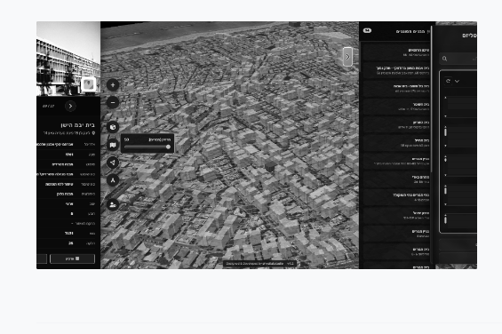
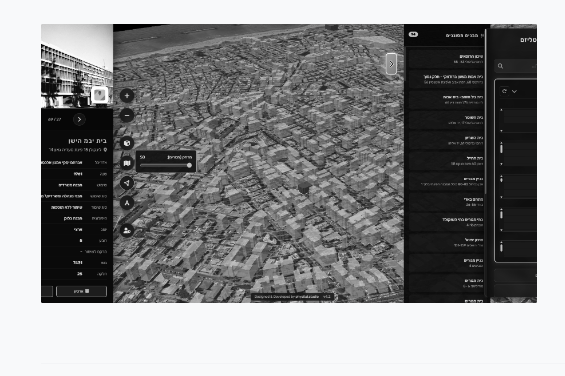

אני כותבת טקסט זה מתוך התרגשות עמוקה והערכה כנה למוסד שממנו צמחתי, ושעבורי היה ועודנו מקור השראה מתמשך לאורך דרכי המקצועית והאקדמית. בצלאל אינה רק תחנת פתיחה בקריירה שלי – היא חלק מהזהות המקצועית שלי כאדריכלות, חוקרת ומרצה.
לבצלאל הגעתי בשנת 2008, צעירה, סקרנית, לאחר מסע של שנה בעולם, ועם תחושה ברורה שזוהי נקודת מפנה בחיי. אני זוכרת היטב את רגע פתיחת המעטפה שבה נכתב שהתקבלתי – רגע שבו הבנתי שמכאן הדרך שלי עומדת להשתנות. נקודת הפתיחה שלי לא הייתה מובנת מאליה, אך הדחף ללמוד, להשתלב ולפעול היה חזק ובלתי ניתן לעצירה. הניצוץ שנדלק בשנים ההן מלווה אותי עד היום.
את האהבה העמוקה למקצוע מצאתי בסטודיו לאדריכלות אזרחית, בהובלת אדר’ ליאת אתגר בריקס – סטודיו שנכנסתי אליו כסטודנטית בשנה ד’, ומבחינתי מעולם לא הסתיים. שם נחשפתי לאדריכלות כפרקטיקה אזרחית, חברתית ופוליטית, המחוברת לקהילה, למרחב ולשאלות של אחריות.
לאחר סיום הלימודים פעלתי בשדה המקצועי – בתהליכי תכנון משתפים במסגרת עמותת “מרחב”, בעבודת שימור, ובמשרדה של פרופ’ ניצה סמוק. בהמשך, המשכתי ללמד בבצלאל, והדחף להעמיק הוביל אותי ללימודים בחו״ל בזכות מלגת קלור–בצלאל. יצאתי ללונדון כנציגה גאה של האקדמיה ללימודי מחקר ב־Royal College of Art.
עם חזרתי לארץ, נעניתי להזמנה לדוקטורט יישומי בטכניון. ביחד עם המנחה שלי, פרופ’ מירב אהרון־גוטמן, הקמנו מעבדה מחקרית רב־תחומית שעסקה בפיתוח כלים דיגיטליים, מתודולוגיות חדשות ותפיסות עדכניות לקבלת החלטות במרחב העירוני. החזרה לבאר שבע, עיר הולדתי, סימלה עבורי סגירת מעגל והצהרת כוונות.
החזרה לבצלאל, הפעם בעמדה של הנהגה, נתפסת בעיניי כהזדמנות לחבר בין ידע, ניסיון וחזון שנצברו לאורך שנים – ולהעצים מוסד חזק אל עבר השלב הבא של בית הספר לארכיטקטורה.
 
